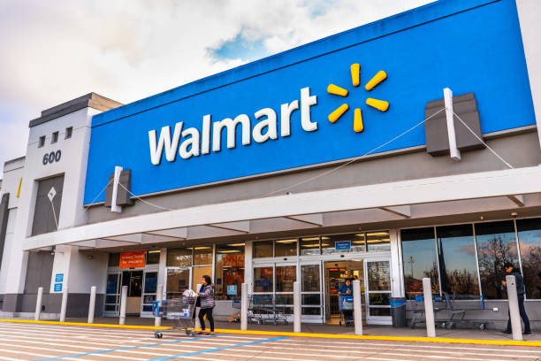
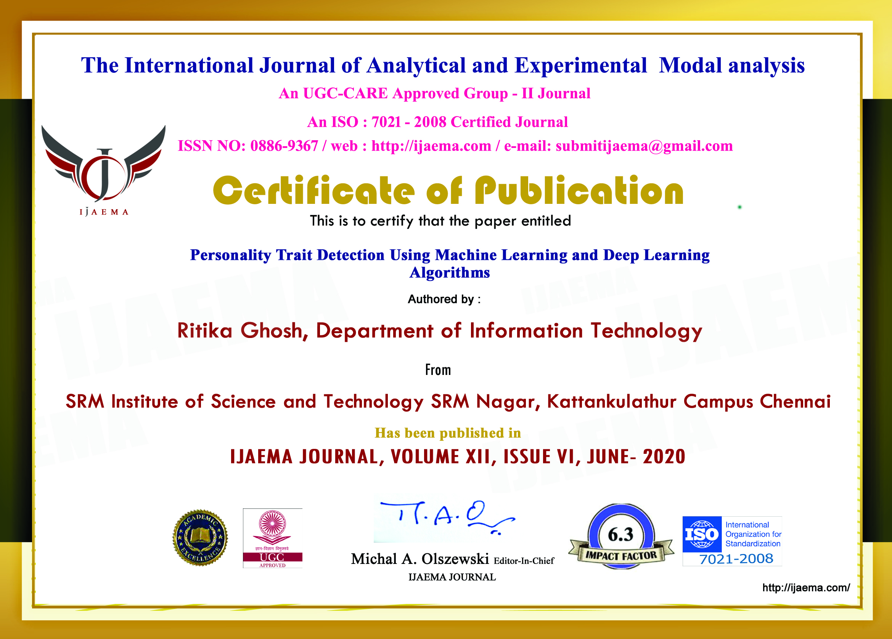
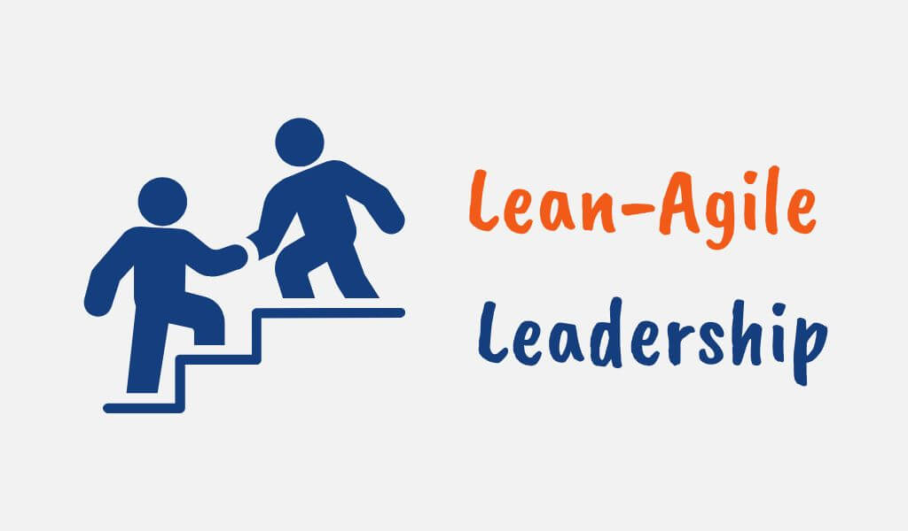

I led the comprehensive analysis and optimization of Hartford HealthCare’s website, focusing on enhancing user engagement and improving the patient experience. By spearheading efforts to segment diverse user groups and identify high-interest health topics, I developed actionable recommendations that included streamlining site navigation, optimizing call-to-action elements, and restructuring the content hierarchy. Leveraging advanced data analysis alongside strategic insights, I ensured the project delivered a more intuitive, efficient, and patient-centric digital experience, aligning with organizational goals to improve accessibility and foster deeper connections with users.

Led the development of an end-to-end, web-based workflow leveraging generative AI to revolutionize financial analysis for retail investors. This innovative system integrates three key components: a financial tool for automated buy/hold/sell recommendations, a retrieval-augmented generation (RAG) system for interactive document querying, and a financial modeling assistant powered by agentic agents for dynamic scenario analysis. Together, these tools address the inefficiencies of traditional research methods, offering scalable, cost-effective, and real-time decision-making capabilities. The workflow has demonstrated significant improvements in accuracy and efficiency, setting a new standard for investor-focused financial technology.

Led the development of a financial management app called NestEgg, designed to empower users with automated tools for savings, investment tracking, and goal setting. The app integrates three core components: real-time expense tracking for improved budgeting precision, advanced analytics for tailored financial insights, and a robust investment portfolio management system for informed decision-making. By leveraging cutting-edge data analysis and user-centric design, the app simplifies personal finance, helping users achieve their goals with greater efficiency. NestEgg’s innovative approach redefines financial management, providing a seamless, data-driven experience that addresses key pain points for modern users.
As part of a case competition, I led the development of a predictive model aimed at optimizing call center resource allocation. Using XGBoost, we focused on identifying high-priority callers based on behavioral and interaction data. Through hyperparameter tuning and threshold optimization, we improved the model's recall by over 5%, ensuring higher accuracy in identifying high-value interactions, even at the cost of a slightly increased false positive rate. This allowed the call center to proactively engage with more customers, optimizing both resource allocation and customer satisfaction. Our final model outperformed the baseline in terms of precision, recall, and F1 score, delivering measurable improvements in operational efficiency and customer engagement.

Led a team in the Harvard Global Case Competition to address a complex acquisition case involving IBM and Equinix. We conducted in-depth market research, financial modeling, and valuation analysis to evaluate feasibility and strategic alignment. Our solution focused on identifying synergies, mitigating risks, and planning for seamless post-merger integration. Recognized for its strategic depth and innovative approach, our work earned us an invitation to the final ceremony, where our rigorous analysis and comprehensive strategy received commendation for addressing critical business challenges.
Developed a predictive modeling solution to classify breast cancer as malignant or benign using a diagnostic dataset of 569 patient records. The project involved extensive data preprocessing, feature engineering, and the implementation of advanced machine learning models, including Logistic Regression, Decision Trees, Bootstrap Forests, and Neural Networks. Leveraged evaluation metrics such as accuracy, AUC-ROC, and misclassification rates to select the best-performing model, achieving significant improvements in diagnostic accuracy and transparency. This work highlights the potential of data-driven tools in early cancer detection and patient outcomes.

In this project, I developed a robust sales forecasting model for Walmart using time series analysis and ARIMAX models in SAS Studio. The primary focus was to analyze seasonality, trends, and the effects of holiday interventions on sales. I integrated multiple datasets, handled missing values, and prewhitened variables like temperature to remove seasonality and improve forecast accuracy. The final model achieved 80-90% accuracy across various bins, providing actionable insights for inventory management and revenue projection. These findings enabled Walmart to better anticipate seasonal sales patterns and optimize their inventory and promotional strategies, particularly during high-demand holiday periods.

This project involved conducting a comprehensive regional sentiment analysis of McDonald’s customer reviews from four states using SAS Text Miner. I utilized advanced text mining techniques, including TF-IDF, topic modeling, and clustering, to uncover the key drivers of customer satisfaction and identify operational challenges. By segmenting the data state-wise, I derived localized insights on service quality, menu preferences, and performance issues. Predictive models, such as Neural Networks and Logistic Regression, were employed to classify sentiment with high ROC scores (0.8+), ensuring reliable results. The analysis led to targeted recommendations for improving customer satisfaction through enhanced operational efficiency, localized menu offerings, and better service training.

This project aimed to develop an innovative system for personality trait detection leveraging machine learning and deep learning algorithms. The system incorporated a user-friendly web interface where users could input free-form responses to thoughtfully designed questionnaires. These responses were processed and analyzed using techniques like TF-IDF, count vectorization, and deep learning models, including RNNs with LSTM cells. The project focused on bridging the gap in understanding personality traits by offering a more flexible and accurate alternative to traditional personality tests. By allowing subjective responses instead of rigid multiple-choice questions, the system provided personalized, insightful personality analysis. The RNN-based model demonstrated higher accuracy compared to traditional machine learning methods like Logistic Regression and SVM, making it a robust solution for applications in psychological assessment and mental health care.

For my Agile Project Management course, I served as a Scrum Master/Product Owner, leading the development of a predictive MATIC scoring model for casualty insurance submissions. Using Agile methodologies and tools like JIRA, I managed sprint planning, user stories, and backlog prioritization to ensure seamless execution. Risk management frameworks, including SWOT and FMEA, were integrated to mitigate potential delays, enabling 100% on-time milestone delivery. I facilitated retrospectives and implemented continuous feedback loops, improving team collaboration and reducing redundancies by 15%. Additionally, I developed a comprehensive training program for underwriters, achieving a 95% proficiency rate in leveraging the new scoring model, transitioning workflows from intuition-based to data-driven decision-making.